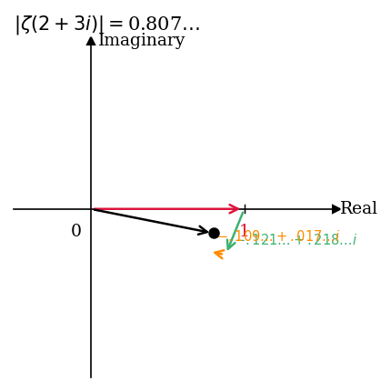
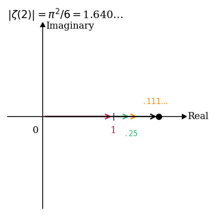

#02 Zeta in the Complex Plane#
Integral test를 이용하여 \(\zeta(s)\)가 실수 \(s > 1\)에서 수렴함을 증명하고, 이를 복소수 \(s\)로 확장하여 \(\operatorname{Re}(s) > 1\)인 영역에서의 수렴성과 \(|\zeta(s)|\)의 상한을 triangle inequality로 도출한다.
Source: Zeta Explained #02
Reference: The Riemann Zeta-Function by Aleksandar Ivić (John Wiley & Sons, 1985)
Overview
Riemann zeta function을 설명하는 시리즈의 두 번째 강의이다. 먼저 실수 \(s > 1\)에 대하여 \(\zeta(s)\)의 급수 정의가 수렴함을 integral test를 이용하여 증명하고, 상한과 하한을 동시에 구한다. 이어서 \(s\)를 실수 조건에서 \(\operatorname{Re}(s) > 1\)을 만족하는 복소수로 확장하고, triangle inequality를 이용하여 \(|\zeta(\sigma + it)| \leq \zeta(\sigma)\)가 성립함을 보인다. 마지막으로 두 부등식을 결합하여 \(\operatorname{Re}(s) \geq 1 + a\) (\(a > 0\)) 영역에서 \(|\zeta(s)|\)의 상한이 \(\zeta(1 + a)\)임을 도출한다. 수강자는 calculus와 complex numbers에 대한 기본 지식을 갖추고 있다고 가정하며, complex analysis의 관련 개념은 강의 중에 필요에 따라 설명한다.
Contents
Integral test를 이용한 \(\zeta(s)\)의 수렴 증명 (\(s > 1\))
적분 상한 도출: \(\sum n^{-s} < 1 + \frac{1}{s-1}\)
적분 하한 도출: \(\sum n^{-s} > \frac{1}{s-1}\)
\(s = 1\)에서의 발산 및 \(\lim_{s \to 1^+} \zeta(s) = \infty\)
실수 직선 위에서 \(\zeta(s)\)의 단조 감소성
\(s\)를 복소수로 확장: \(s = \sigma + it\), \(\sigma > 1\)
Triangle inequality를 이용한 \(|\zeta(\sigma + it)| \leq \zeta(\sigma)\) 증명
\(e^{i\theta}\)의 기하학적 해석과 triangle inequality의 직관적 이해
\(\zeta(2 + 3i)\)와 \(\zeta(2)\)의 복소평면 벡터 합산 시각화
\(\operatorname{Re}(s) \geq 1 + a\) 영역에서 \(|\zeta(s)|\)의 상한 도출
1. Convergence of \(\zeta(s)\) on Real Numbers#
정의 및 설정#
Riemann zeta function은 실수 \(s > 1\)에서 다음과 같이 정의된다.
이 급수가 \(s > 1\)인 실수에 대하여 실제로 수렴함을 integral test를 이용하여 증명한다. Integral test는 positive-term series의 수렴·발산을 대응하는 이상적분과 비교하여 판정하는 방법이다.
상한 도출 (Integral Test — Upper Bound)#
\(y = x^{-s}\) 곡선 아래에 각 항 \(1/n^s\)를 높이로 하는 단위 폭의 직사각형을 배치한다. 각 직사각형이 구간 \([n-1, n]\) 위에 세워지면, \(x = n\)에서의 함수값 \(1/n^s\)가 직사각형의 높이가 되므로, 직사각형의 면적이 곡선 아래의 넓이보다 작거나 같게 된다. 이 배치에서 \(n \geq 2\)에 해당하는 직사각형들, 즉 두 번째 직사각형부터 시작하는 합산은 곡선 아래 넓이보다 작다.
첫 번째 직사각형의 넓이는 \(1/1^s = 1\)이므로, 이를 더하면 상한을 얻는다.
\(s > 1\)이면 \(1/(s-1)\)이 유한하므로, 이 부등식은 급수가 수렴함을 보장한다. 또한 모든 항이 양수이므로 이 급수는 absolutely convergent하다.

Figure 1. 적분 판정법 — 상한 도출
\(y = 1/x^s\) 곡선과 각 항 \(1/n^s\)에 대응하는 직사각형을 나타낸다. 각 직사각형은 구간 \([n-1, n]\) 위에 배치되며, 두 번째 직사각형(\(n = 2\))부터 시작하는 합이 \(\int_1^{\infty} x^{-s}\, dx\)보다 작음을 보여준다. 이 관계를 통해 \(\sum n^{-s} - 1 < 1/(s-1)\), 즉 급수의 상한이 \(1 + 1/(s-1)\)임이 도출된다. 슬라이드 하단의 부등식 \(\sum_{n=1}^{\infty} n^{-s} - 1 < \int_1^{\infty} x^{-s}\, dx = 1/(s-1)\)이 이 관계를 수식으로 정리한 것이다.
하한 도출 (Integral Test — Lower Bound)#
이번에는 각 직사각형을 구간 \([n, n+1]\) 위에 배치한다. 즉, 직사각형을 오른쪽으로 한 칸씩 이동시킨 형태이다. 이 경우 모든 직사각형을 합산한 넓이가 곡선 아래 넓이보다 크게 된다. 따라서 하한을 얻는다.

Figure 2. 적분 판정법 — 하한 도출
직사각형을 오른쪽으로 한 칸 이동하여 구간 \([n, n+1]\) 위에 배치한 경우를 나타낸다. 이 배치에서 직사각형 전체의 합산 넓이가 곡선 아래 넓이를 초과하므로, \(\sum_{n=1}^{\infty} n^{-s} > \int_1^{\infty} x^{-s}\, dx = 1/(s-1)\)의 하한 부등식이 성립한다. Figure 1과 Figure 2를 결합하면 급수의 상한과 하한이 동시에 확립된다.
수렴 결론 및 \(s = 1\)에서의 거동#
상한과 하한을 결합하면 다음의 이중 부등식을 얻는다.
이 부등식은 \(s > 1\)인 모든 실수에 대해 급수가 수렴함을 보장한다. 한편 \(s \to 1^+\)이면 \(1/(s-1) \to \infty\)이므로 하한이 발산하고, 따라서
가 성립한다. 극한에 방향 기호 \(1^+\)를 사용하는 것은, \(\zeta(s)\)가 급수 정의로는 \(s > 1\)인 실수에서만 정의되어 있어 \(s < 1\)에서의 거동이 아직 논의되지 않았기 때문이다.
2. Zeta on the Real Line#
두 실수 \(y > x > 1\)에 대하여, \(\zeta(x)\)와 \(\zeta(y)\)의 각 항을 비교한다.
\(y > x > 1\)이면 \(n^y > n^x\)이므로 \(n \geq 2\)인 모든 \(n\)에 대해 \(1/n^y < 1/n^x\)가 성립한다. 따라서 모든 항을 합산하면,
이 성립한다. 이는 \(\zeta(s)\)가 실수 \(s > 1\)의 범위에서 **monotonically decreasing)**함을 의미한다. 이 결과는 다음 섹션에서 \(|\zeta(s)|\)의 상한을 확립하는 데 사용된다.
3. Zeta in the Complex Plane — Definition and Convergence#
복소수로의 확장#
\(s\)를 실수 조건에서 \(\operatorname{Re}(s) > 1\)을 만족하는 복소수로 일반화한다. 표준 표기법에 따라 \(s\)를 실수부와 허수부로 분리하여 다음과 같이 쓴다.
여기서 \(\sigma = \operatorname{Re}(s)\)는 실수부, \(t = \operatorname{Im}(s)\)는 허수부이다. \(\operatorname{Re}(s) > 1\)이라는 조건은 \(\sigma > 1\)과 동치이다.
복소수 \(s\)에 대한 \(\zeta(s)\)의 정의는 형식적으로 동일하다.
각 항의 전개#
\(s = \sigma + it\)를 대입하여 각 항 \(n^{-s}\)를 전개한다. 지수 법칙과 \(n = e^{\log n}\)을 이용하면,
여기서 \(\log\)는 자연로그를 의미한다. 이 강의 시리즈에서 \(\log\)는 항상 자연로그 \(\log_e\)를 나타낸다.
Triangle Inequality를 이용한 수렴 증명#
\(|\zeta(\sigma + it)|\)의 상한을 triangle inequality로 도출한다.
두 번째 줄에서 사용한 triangle inequality는 무한급수에 대한 일반화로, \(\left|\sum a_n\right| \leq \sum |a_n|\)이 성립함을 이용한 것이다. 네 번째 줄에서 \(\left|e^{-it(\log n)}\right| = 1\)이 되는 이유는, \(e^{i\theta}\)가 복소평면의 unit circle 위의 점을 나타내기 때문이다. 따라서 다음의 핵심 부등식을 얻는다.
이 부등식은 복소수 입력에서의 \(\zeta\) 값의 크기가, 허수부를 제거하고 실수부만 남긴 값에서 계산한 \(\zeta\) 값보다 크지 않음을 의미한다. 또한 이미 \(\zeta(\sigma)\)가 \(\sigma > 1\)인 실수에 대해 수렴함이 증명되었으므로, \(\operatorname{Re}(s) > 1\)인 모든 복소수에 대해 \(\zeta(s)\)가 수렴함이 도출된다.
\(e^{i\theta}\)의 기하학적 해석#
\(e^{i\theta}\)는 복소평면에서 원점으로부터 반지름 1, 각도 \(\theta\) (반시계 방향)에 위치한 단위원 위의 점이다. 복소수에 \(e^{i\theta}\)를 곱하는 것은 해당 복소수를 반시계 방향으로 \(\theta\) 라디안만큼 회전시키는 연산이다. 따라서 \(|e^{i\theta}| = 1\)이 항상 성립한다.
4. Visualization of \(\zeta(s)\) for Complex Input#
벡터 합산으로서의 급수#
\(\zeta(s)\)의 급수를 복소평면에서 벡터들의 순차 합산으로 시각화한다. 각 항 \(1/n^s\)는 복소평면에서 하나의 벡터(화살표)에 대응한다. 급수의 부분합은 이 벡터들을 순서대로 이어 붙인 것이다.
두 경우 \(s = 2 + 3i\)와 \(s = 2\)를 비교한다. 두 경우 모두 실수부가 \(\sigma = 2\)로 동일하므로, 각 항의 modulus는 동일하다. 차이는 허수부 \(t\)의 유무에 있다.
\(s = 2\)인 경우, 각 항 \(1/n^2\)은 양의 실수이므로 모든 벡터가 같은 방향(양의 실수축 방향)을 향한다. 따라서 급수는 단순한 직선 위에서 수렴하며, 그 합은 Basel problem의 결과인 \(\pi^2/6 \approx 1.644\)이다.
\(s = 2 + 3i\)인 경우, 각 항의 크기는 \(s = 2\)의 대응 항과 동일하지만, 각 항이 \(e^{-it(\log n)} = e^{-3i(\log n)}\)만큼 회전된다. 두 번째 항은 \(3 \log 2\) 라디안만큼 회전되고, 세 번째 항은 \(3 \log 3\) 라디안만큼 회전된다. 결과적으로 벡터들이 각각 다른 방향을 향하며, 급수는 나선형으로 감기면서 수렴한다.
수렴값은 다음과 같다.

Figure 3. 복소평면에서 \(\zeta(2 + 3i)\)의 벡터 합산
복소평면에서 \(\zeta(2 + 3i)\)의 급수를 벡터의 순차 합산으로 나타낸 것이다. 첫째 항은 실수축 위의 \(1\)에서 시작하며, 이후 각 항이 서로 다른 방향을 향하여 나선형으로 감기면서 수렴점 \(\zeta(2 + 3i) \approx 0.798 + 0.113i\)에 접근한다. 두 번째 항의 회전각은 \(3 \log 2\) 라디안이며, 항이 진행될수록 벡터의 크기는 감소하고 회전이 누적된다. 이 그림은 복소 입력에서의 급수 수렴이 허수부에 의한 회전 효과로 인해 나선형 구조를 띰을 시각적으로 보여준다.

Figure 4. 복소평면에서 \(\zeta(2)\)의 벡터 합산
복소평면에서 \(\zeta(2)\)의 급수를 벡터의 순차 합산으로 나타낸 것이다. 모든 항 \(1/n^2\)이 양의 실수이므로 벡터들이 모두 실수축의 양의 방향을 향하며, 부분합이 단조 증가하면서 \(\pi^2/6 \approx 1.644\)에 수렴한다. \(\zeta(2 + 3i)\)와 비교하면 각 항의 크기는 동일하지만, 허수부가 없어 회전이 발생하지 않는다. 원점에서 수렴점까지의 거리, 즉 \(|\zeta(2)|\)가 \(|\zeta(2 + 3i)|\)보다 큰 것은 triangle inequality의 등호 조건이 성립하지 않음을 반영한다.
Triangle Inequality의 기하학적 직관#
두 그림은 triangle inequality \(|\zeta(\sigma + it)| \leq \zeta(\sigma)\)에 대한 기하학적 직관을 제공한다. 각 항의 크기가 동일하더라도, 벡터들이 같은 방향을 향하는 경우(\(s = 2\))의 합산 크기가 서로 다른 방향을 향하는 경우(\(s = 2 + 3i\))의 합산 크기보다 크거나 같다. 등호는 모든 벡터가 완전히 같은 방향을 향할 때, 즉 허수부 \(t = 0\)일 때에만 성립한다.
5. Bound of \(|\zeta(s)|\) in a Half-Plane#
두 부등식의 결합#
앞서 두 가지 부등식을 확립하였다.
부등식 (8): \(|\zeta(\sigma + it)| \leq \zeta(\sigma)\) — triangle inequality로부터
부등식 (6): \(\zeta(y) < \zeta(x)\) (\(y > x > 1\)) — 단조 감소성으로부터
이 두 부등식을 결합하여 특정 영역에서 \(|\zeta(s)|\)의 상한을 확정한다.
영역 설정#
\(a > 0\)을 고정하고, \(\operatorname{Re}(s) \geq 1 + a\)를 만족하는 영역, 즉 \(\sigma \geq 1 + a\)인 반평면을 고려한다. 이 영역에서 \(s\)를 임의로 선택하면 \(\sigma \geq 1 + a > 1\)이므로, 단조 감소성에 의해
가 성립한다. 이를 부등식 (8)에 결합하면 transitivity에 의해,
를 얻는다.

Figure 5. \(\operatorname{Re}(s) \geq 1 + a\) 영역에서 \(|\zeta(s)|\)의 상한
복소평면에서 \(\operatorname{Re}(s) \geq 1 + a\)에 해당하는 반평면(회색 영역)을 나타낸다. 이 영역 내의 임의의 점 \(\sigma + it\)에 대하여, 부등식 (8)에 의해 \(|\zeta(\sigma + it)| \leq \zeta(\sigma)\)이고, 단조 감소성에 의해 \(\zeta(\sigma) \leq \zeta(1 + a)\)가 성립한다. 따라서 이 영역 전체에서 \(|\zeta(s)|\)의 최댓값은 실수축 위의 점 \(s = (1 + a) + 0i\)에서 달성되며, 그 값은 \(\zeta(1 + a)\)이다. \(s = 1\)은 \(\zeta(s)\)의 pole로 이 영역에 포함되지 않으며, \(a > 0\)으로 고정함으로써 singularity를 회피하고 있다.
결과의 의미#
부등식 (9)는 \(\operatorname{Re}(s) \geq 1 + a\) 영역 내에서 \(|\zeta(s)|\)가 단일 실수값 \(\zeta(1 + a)\)로 uniform bound됨을 의미한다. 이 영역에서 \(|\zeta(s)|\)의 최댓값은 허수부 \(t\)와 무관하게 결정되며, 실수축 위의 점 \(s = (1 + a) + 0i\)에서 달성된다. 이 결과는 이후 강의에서 \(\zeta(s)\)의 analytic properties를 분석할 때 기초가 된다.
6. Summary#
\(\zeta(s)\)는 실수 \(s > 1\)에서 integral test에 의해 수렴하며, 이중 부등식 \(\frac{1}{s-1} < \zeta(s) < 1 + \frac{1}{s-1}\)이 성립한다. 모든 항이 양수이므로 절대수렴한다.
\(s \to 1^+\)일 때 \(\zeta(s) \to \infty\)이므로 \(s = 1\)은 pole이다. 실수 \(s > 1\) 범위에서 \(\zeta(s)\)는 단조 감소한다.
\(s = \sigma + it\) (\(\sigma > 1\))로 일반화하면, triangle inequality에 의해 \(|\zeta(\sigma + it)| \leq \zeta(\sigma)\)가 성립하며, \(\operatorname{Re}(s) > 1\)인 모든 복소수에 대해 \(\zeta(s)\)가 수렴함이 도출된다.
\(|\zeta(\sigma + it)| \leq \zeta(\sigma)\)의 기하학적 의미는, 복소 입력에서 벡터들이 서로 다른 방향을 향하여 합산되므로 실수 입력의 경우보다 크기가 작거나 같다는 것이다. 이는 \(\zeta(2 + 3i)\)와 \(\zeta(2)\)의 비교 시각화를 통해 직관적으로 확인된다.
\(a > 0\)을 고정하면 \(\operatorname{Re}(s) \geq 1 + a\) 영역 전체에서 \(|\zeta(s)| \leq \zeta(1 + a)\)의 균등 상한이 성립하며, 최댓값은 실수축 위의 점 \(s = (1 + a) + 0i\)에서 달성된다.
다음 강의에서는 \(\zeta(s)\)의 analytic properties, 즉 continuity 및 differentiability를 분석한다.
7. Review Questions#
Integral test를 이용하여 \(\zeta(s)\)가 실수 \(s > 1\)에서 수렴함을 증명하라. 상한과 하한 각각에서 직사각형 배치를 어떻게 달리하는지 설명하라.
이중 부등식 \(\frac{1}{s-1} < \zeta(s) < 1 + \frac{1}{s-1}\)에서 \(s \to 1^+\)로 취할 때 어떤 결론을 얻는가? 극한의 방향을 \(1^+\)로 한정하는 이유를 설명하라.
\(\zeta(s)\)가 실수 \(s > 1\)에서 단조 감소임을 항별 비교를 이용하여 증명하라.
\(s = \sigma + it\)로 표기할 때 \(\sigma\)와 \(t\)는 각각 무엇을 나타내는가? 이 강의 시리즈에서 이 표기가 표준으로 사용되는 이유를 설명하라.
\(n^{-it}\)를 \(e^{-it(\log n)}\)으로 변환하는 과정을 지수 법칙을 이용하여 단계적으로 설명하라.
Triangle inequality \(|\zeta(\sigma + it)| \leq \zeta(\sigma)\)를 증명하라. 이 과정에서 \(|e^{-it(\log n)}| = 1\)이 되는 이유를 기하학적으로 설명하라.
\(\zeta(2 + 3i)\)와 \(\zeta(2)\)를 복소평면에서 벡터 합산으로 나타낼 때, 두 급수의 각 항의 크기는 동일하지만 수렴점까지의 거리는 다르다. 그 이유를 triangle inequality와 연관지어 설명하라.
\(e^{i\theta}\)의 절댓값이 항상 1인 이유를 기하학적으로 설명하라. 복소수에 \(e^{i\theta}\)를 곱하는 것이 어떤 연산에 해당하는가?
\(a > 0\)을 고정할 때 \(\operatorname{Re}(s) \geq 1 + a\)인 영역에서 \(|\zeta(s)| \leq \zeta(1 + a)\)가 성립함을 부등식 (8)과 (6)을 이용하여 증명하라. 이 영역에서 \(|\zeta(s)|\)의 최댓값은 어디서 달성되는가?
이번 강의에서 \(a > 0\)을 먼저 고정하고 \(\sigma \geq 1 + a\)인 영역을 고려하는 이유는 무엇인가? \(a = 0\)으로 설정하면 어떤 문제가 생기는가?